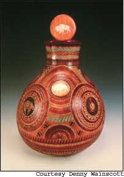
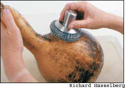
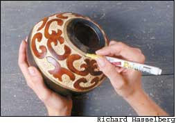
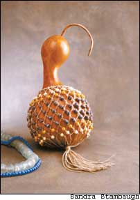
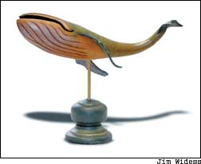
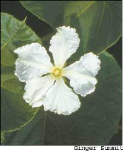
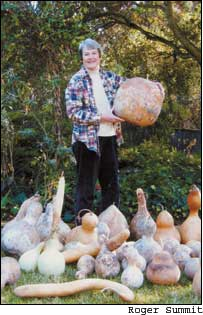

Eight years ago, while reading a magazine in a barber shop near his home in Frankfort, Ind., Denny Wainscott ran across an article about an engraving tool that he thought might be interesting to try on gourds. It worked, and a few years later he added stains, dyes and inlay to his gourd-crafting skills. In 2003, one of Wainscott’s pieces, “Path to Harmony,” (left) sold for $20,000, but he doesn’t think working with gourds is about money.
“Gourds are nature’s storage vessels and a gift for all of us to enjoy,” he says. “I’m lucky to be able to express my love of nature by using something she has given to us.”
More and more people share Wainscott’s appreciation for the hollow, hard-shelled members of the cucurbit family known as gourds. There are several types of gourds, but hard-shell gourds, Lagenaria siceraria, are the ones people have used as dishes, dippers, jars, pipes, musical instruments and hundreds of other household objects for the last 5,000 years. “Gourds were probably the first containers ever used by human beings,” says Ginger Summit, author of six books on crafting and growing gourds. “They satisfy the creative urge to decorate, and then you can use them for all sorts of purposes.”
Thousands of people agree. Membership in the American Gourd Society (www.americangourdsociety.org) has steadily increased in the last decade, and now 19 state chapters exist from Florida to Idaho. Some folks love to grow these “vegetable vessels,” others are intrigued by their history, and many find compelling creative possibilities in crafting with gourds. To gourdheads like Virginia artist Leah Comerford, crafting gourds is about preserving, enhancing and enjoying one of nature’s own art forms.
Crafting gourds is something anyone can do. “With gourds, you cannot fail,” Summit says, and proves it in gourd-craft workshops she conducts for children and teenagers at risk. “Gourds are beautiful as they are, but add a little color, a little polish, and suddenly you’ve turned a gourd into your own work of art.”
Except in the coldest climates, anyone can grow gourds. “There is a special value in holding a work of art that nature started as a seed,” Comerford says. Although gourds are warm-natured plants that thrive in hot weather, they are grown commercially as far north as Ontario, where Pam Grossi and Peter Bell grow craft-quality gourds at their Northern Dipper Farm. And if you can’t grow your own, you can buy gourds from a number of Web sites and farms.
Historically, gourds have followed people around by making themselves at home in compost heaps, and this remains an excellent blueprint for growing good gourds. As a starter project, set up a sturdy wire tomato cage in a sunny corner of your yard or garden and fill it a foot deep with compostables such as leaves, fruit and veggie scraps, coffee grounds, weathered manure, spoiled hay and so forth. Top it off with an inch of soil, and plant four gourd plants at the base of the cage. Small 4-inch-tall bottle gourds will thrive in this setup, as will little egg gourds or any other type of ornamental gourd
Grow medium-sized gourds that reach 8 to 18 inches tall on the ground, or save space (and get straighter, long gourds) by providing them with a trellis. Gourds get very heavy as they mature, so their support must be sturdy. Luffa gourds, used as sponges when dry, must always be trellised, however, because luffa fruit is likely to rot if it rests on the ground. Many gourd growers support gourd vines on trellises made by building two tipis with 2-by-2 boards, attached to each other at the top with a long plank. Or, let your gourd vines ramble over an arbor, an approach that has long been popular in China and Japan.
Large gourds weighing more than 20 pounds when they are green are best grown on the ground. In Gourds in Your Garden, Summit also notes that gourds that are able to re-root as they run along the ground often are able to recover from damage caused when squash vine borers tunnel through the plants’ primary growing crown. Another advantage to growing gourds on the ground is that you can fine-tune their shape. “I often go out in the evening and set all of my gourds upright to help them develop good, flat bottoms,” Wainscott says. “That way my pieces of art will sit upright and solid.”
Once you have decided where you will grow your gourds, prepare the soil by amending it with plenty of nutrient-rich organic matter. Karen Manasco, a gourd grower in Hulbert, Okla., got her best crop of gourds by digging plenty of chicken manure from her farm flock into the beds at the base of her permanent gourd arbors, which consist of wire field fencing attached to wood frames. In South Carolina, Kevin Coker grows his gourds on the ground and prepares the soil in the fall by piling on all the leaves and cow manure he can find. He tills all this material under in early spring, along with a dusting of wood ashes for extra potassium. “The best soil additive is compost,” Coker emphasizes.
With site and soil preparation under way, it’s time to start the seeds. Gourd seeds have hard coats, so they soak up water slowly, which delays germination. To hasten sprouting time, use a nail clipper to nip off the pointed shoulders of dry seeds (not the single pointed tip). Soak them overnight in water, with a paper towel stuffed into the container to keep the seeds from floating, then plant them the next day.irect seeding in prepared soil is fine as long as the soil is warm, but many growers start gourd seeds indoors about a month before setting out the plants. Gourd seedlings need plenty of light, and they require a gradual adjustment to full sun. To harden off indoor-grown seedlings in a week, Coker suggests setting them in the sun for only a half hour for two days, then increasing their sun exposure by one hour each day for five more days before planting them in the garden after your last frost has passed
As the weather warms in early summer, gourd vines explode with energy, often lengthening by 6 inches a day. Small gourds need no further attention until the fruits mature, but as big gourds gain size, it’s wise to place a piece of perforated white plastic under them as a precaution against rot. And, when you want really huge gourds (some artists willingly pay $50 or more for a perfect 20-inch gourd), pinch off all but two or three fruits per vine to help the plants send their energy to the remaining gourds.
Most hard-shell gourds begin to lose their green color as they mature. Still, it’s best to leave them in the garden as long as possible - until frost, or until the vines die back on their own. In dry climates, mature gourds can be left outside to cure, a process that takes from three to six months. Or, you can cut them with stems attached and take them into a barn or other dry place. Let them dry slowly until you can hear seeds rattle when you pick up the gourd and shake it
Cured, ready-to-craft gourds often are blotched with mold, so the first step is to clean them. You can clean one or two indoors at the kitchen sink, but if you have several, move the operation outdoors. Fill a tub, wheelbarrow or watering trough with water, toss in the gourds and then cover them with a sopping-wet towel. Let them soak for at least an hour, and then start scrubbing.avid Wuttke, who with his gourd-artist wife, Ronna, owns Turtle Feathers, a provider of gourd crafting supplies in Waynesville, N.C., recommends using a copper dish scrubber, which is harsh enough to scrape off the mold and the gourds’ waxy outer coating without scratching the gourd itself. “When you hit a spot that won’t scrub clean, put it back to soak some more, and go on to another gourd. If the spot won’t budge after another try, switch to a stainless steel dish scrubber as long as you don’t rub too hard.” Even after cleaning, few gourds are flawless, and gourds owe some of their allure to natural blemishes, which often look great after the gourd is polished or stained. After the gourds are scrubbed clean, simply leave them to dry in the sun for a day or two before launching into an artistic project
Gourds can be painted or decorated whole, but most gourd crafts require the gourd to be cut. Before cutting, decide what you want to do with the gourd, and then follow the woodworker’s credo: “Measure twice, cut once.” You should also wear a dust mask when cutting, sanding or carving gourds. “Read up on safety issues,” Comerford says. “Many gourd artists have suffered from respiratory ailments before admitting that they must always wear their ventilation masks as well as goggles.”
Serious gourd crafters invest in hand-sized power saws that cost about $80 (including power amp and blades), but you can cut gourds using a sharp kitchen knife to start the hole, and then saw the rest of the way through with a manual keyhole saw (about $5 at craft shops). Throughout the cutting process, rounded gourds are easier to hold steady on a foam pad, such as eggshell packing foam, which will also protect your tabletop, or your lap, from accidental slips of the knife or saw.
After the gourd is cut open, scrape out the seeds and pulp with a grapefruit spoon or the edge of an oyster shell. The seeds can be saved for replanting, or you can throw them in your compost heap. Then smooth out the inside of the gourd and the cut edge with fine sandpaper, and you’re ready to proceed with your project.
What kind of project should that be? “Gourd craft is very beginner-friendly,” Summit says. “It requires little or no investment in materials because you can start with what you have.” Experienced gourd crafters let each unique gourd inspire them, but beginners should take on easy projects such as simple birdhouses, bowls, cups and vases. Gourds can be decorated by painting, wood burning, carving, staining or simply polishing them up with shoe polish. Numerous books are available to help you develop your gourd-crafting skills, which often borrow methods from the worlds of woodworking, painting, leather craft and basketry.
As your appreciation of gourds deepens, don’t be surprised if they become something of an obsession. Karen Manasco’s specialty is growing superior gourd seeds, and each year she looks forward to what she calls her “gourd pageant,” in which she lines up her best specimens on wood pallets before choosing winners worthy of keeping for seed. At Denny Wainscott’s house, where up to 50 cured, cleaned gourds sit in waiting in his studio and family room, he often wakes up in the middle of the night with an idea that’s perfect for one of the gourds. “I get up right then and there and start drawing on the gourd,” he says. Leah Comerford uses the natural markings on gourds as her creative muse. “It’s similar to seeing images in clouds, except that gourds hold still and allow those images to be drawn out.”
The bottom line? Hard-shell gourds of almost any kind are a mysterious, renewable, artistic resource.
By July, each of your gourd plants will sport dozens of pretty white blooms. If you don’t plan to save the seeds, or if you’re growing only one type of gourd, let insects take care of pollination. However, if your patch includes an array of shapes and sizes, and you do want to save seeds from your best specimens, you’ll need to practice planned parenthood in your gourd patch. If you don’t, and pollen from a male bottle gourd blossom is carried to a female canteen or apple gourd flower, for example, the seeds inside your accidental hybrid are likely to grow out to produce what gourd grower Karen Manasco calls “bloopers.”
To keep a strain pure, Manasco chooses a few promising-looking female buds (easily spotted because they have tiny gourds at their base) and covers them with cheesecloth secured with a rubber band. As soon as they open, she pollinates them by picking male blossoms from the same strain and “kissing” them into the females, which are then re-covered with cheesecloth for a few more days to keep out pollinating insects. When the blossoms fade, the hand-pollinated gourds can be marked by tying a colorful ribbon to the closest tendril
Hard-shell gourds (Lagenaria siceraria) make for great crafting, but they need a long, warm growing season to develop mature fruits. In cool climates, only small-bottle or egg-shaped Lagenarias mature fast enough to make a good crop. Colorful ornamental gourds (Cucurbita pepo ovifera) mature in 90 days, and come in a wild assortment of shapes, colors and sizes. Mixed packets of seed often include winged pears, warted dumplings and little striped pumpkins. Wiped with a damp cloth, ornamental gourds make long-lasting table decorations
Books The photos in this article came from:
Complete Book of Gourd Carving by Jim Widess and Ginger Summit, 2004
Gourds in Your Garden: A Guidebook for the Home Gardener
by Ginger Summit, 1998
The Weekend Crafter: Gourd Crafts, 20 Great Projects to Dye, Paint, Carve, Bead and Woodburn in a Weekend
by Ginger Summit, 2000
The Complete Book of Gourd Craft
by Ginger Summit and Jim Widess, 1996
Cured gourd sources
Northern Dipper Farm
Rural Route 1
Wilsonville, ON N0E 1Z0
(519) 443-5638
www.northerndipper.com
Sandlady’s Gourd Farm
10295 N. 700 W
Kingman, IN 47952
(765) 498-5428
www.sandlady.com
Welburn Gourd Farm
31752 Pepper Tree St
Winchester, CA 92596
(888) 873-3622
www.welburngourds.com
gourd crafting supplies
The Caning Shop
926 Gilman St Berkeley, CA 94710
(800) 544-3373
www.caning.com
Turtle Feathers
P.O. Box 1227
Waynesville, NC 28786
(828) 926-4716
www.turtlefeathers.com
|
 Cleaning off dirt and mold is the first step toward creating a beautiful work of art from a hard-shell gourd. |
 This African shekerie (gourd rattle), created by Ginger Summit, uses about 150 beads |
 ""Humpback Whale? by Sam Ponder |
|
 Ginger Summit, author and gourd artist, surrounded by hard-shell gourds. |
 |
 |
|
 |
|
|